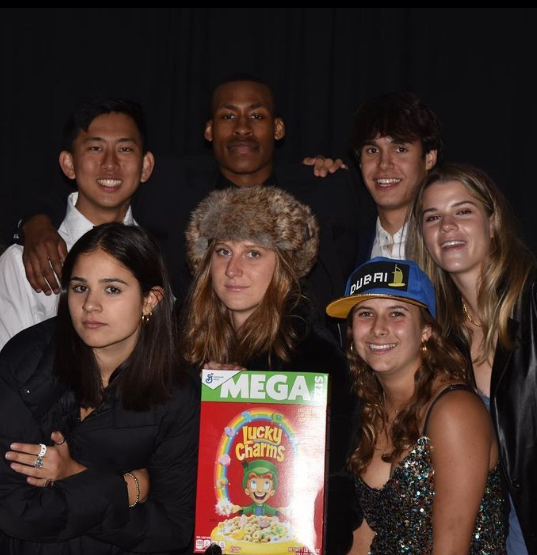

Tony Wang
A member of the class of 2022, I recieved my high school diploma at St. Andrew's School in Delaware. However, I didn't spend all four years there. However the two years I did have there is a part of my life I will never forget.
For my first two years of highschool, I attended a public school nearby named San Juan Hills Highschool. After joining a soccer club, one of my teammates told me about how he was about to leave to attend boarding school. At first I was neutral to this idea as the thought of attending boaridng school never entered my mind. However, after having a coversation with my Dad, we decided to try applying to some schools for the sake of it and see what would happen. As it turns out I was admitted to one of the top boarding schools in the country. However, as good as it was academically, the athletic side of the school was near dreadful as the school only holds a student-body of 300 or so students. However, I didn't let this affect my accomplishments as I continued to pursue my dreams of playing sports in college and was able to win All-State awards in two of the three sports. While at school, I was able to create closer bonds with not just peers but faculty aswell, something that I would never have been able to accompolish while at an ordinary public school such as mine.
As of August of 2022, I will be a part of the 2026 Middlebury College class. While there I will be majoring in Computer
Science and Economics as well as pursuing some minors as well. While there I will also be a memeber of the football and
track and field varsity team.